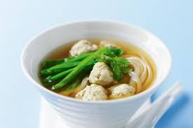

Fujian cuisine, or 闽菜 (Mǐn cài), is a gem of Chinese culinary culture, boasting a reputation for its light yet flavorful dishes. With a focus on fresh, high-quality ingredients, especially seafood, and an emphasis on soups and broths, it creates a dining experience that is satisfying.
Buddha Jumps Over the Wall (佛跳墙): A luxurious stew made with premium ingredients like abalone, sea cucumber, and shark fin, slow-cooked for hours.
Fish Ball Soup (鱼丸汤): Tender fish balls often stuffed with minced pork, floating in a flavorful clear broth.
Fried Oyster Omelette (蚝煎): A crispy, savory egg dish filled with fresh oysters, popular as street food.
